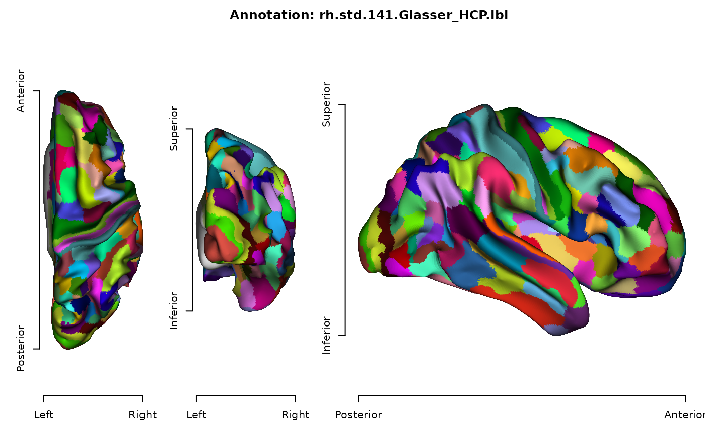

Reads a NIML ('.niml.dset') file into a nested tree of
elements. All NIML storage forms are supported: plain text,
binary.lsbfirst, binary.msbfirst, base64.lsbfirst, and
base64.msbfirst; the file may additionally be gzip compressed.
All NIML column types are supported, including 'String',
'Line', 'complex', 'rgb', and 'rgba'.
Most users should call read_surface or
read_colormap instead, which build surface annotation and
color map objects on top of this function.
Usage
niml_find(x, name, recursive = TRUE, groups = FALSE)
io_read_niml(file)
niml_as_surface(file, type = NULL, name = path_ext_remove(basename(file)))Arguments
- x
an
'ieegio_niml'object, or an element node within one- name
name of the data; used when the name cannot be inferred from the data file to set surface data names
- recursive
whether to descend into nested
ni_groupelements; default is true. UseFALSEto restrict the search to the immediate children, for example to select the data element belonging to a dataset itself rather than the one inside its label table- groups
whether to return
ni_groupelements instead of data elements; default is false- file
path to a
NIMLfile- type
type of the data table, either
'annotations'for discrete data with look-up color table, or'measurements'for continuous values; set toNULLor'auto'for automated detection; default isNULL
Value
io_read_niml returns an 'ieegio_niml' object: a list
of element nodes. Each node has a name, an attributes
character vector, and either children (for ni_group elements)
or a value data.frame with one column per ni_type entry
and ni_dimen rows. niml_find returns a list of the matching
element nodes.
Examples
# Build a small NIML dataset with a nested label table
path <- tempfile(fileext = ".niml.dset")
writeLines(c(
'<AFNI_dataset dset_type="Node_Label" ni_form="ni_group" >',
'<SPARSE_DATA ni_type="int" ni_dimen="4" >',
' 0 1 2 1',
'</SPARSE_DATA>',
'<AFNI_labeltable ni_form="ni_group" >',
'<SPARSE_DATA ni_type="4*float,int,String" ni_dimen="3" >',
' 0 0 0 1 0 "Unknown"',
' 1 0 0 1 1 "Left Insula"',
' 0 0 1 1 2 "Right Insula"',
'</SPARSE_DATA>',
'</AFNI_labeltable>',
'</AFNI_dataset>'
), path)
x <- io_read_niml(path)
print(x)
#> <ieegio NIML>
#> + AFNI_dataset [group: 2 element(s)]
#> - SPARSE_DATA: int [text] 4 x 1
#> + AFNI_labeltable [group: 1 element(s)]
#> - SPARSE_DATA: 4*float,int,String [text] 3 x 6
# the data belonging to the dataset itself, not to the label table
dset <- x[[1]]
niml_find(dset, "SPARSE_DATA", recursive = FALSE)[[1]]$value
#> V1
#> 1 0
#> 2 1
#> 3 2
#> 4 1
unlink(path)
# ---- Read as a surface annotation/measurement --------------
# This example requires extra sample data. Please run
# `ieegio_sample_data("niml/rh.std.141.Glasser_HCP.lbl.niml.dset")`
# to download sample NIML data
has_niml_file <- ieegio_sample_data(
file = "niml/rh.std.141.Glasser_HCP.lbl.niml.dset",
test = TRUE
)
if (has_niml_file) {
niml_file <- ieegio_sample_data(
file = "niml/rh.std.141.Glasser_HCP.lbl.niml.dset"
)
surf_file <- ieegio_sample_data("gifti/std.141.rh.inf_200.gii")
# Read in surface mesh
mesh <- read_surface(surf_file)
# read_surface internally uses `niml_as_surface` for niml.dset
annot <- niml_as_surface(niml_file)
merged <- merge(mesh, annot)
plot(merged)
}
#> Merging geometry attributes, assuming all the surface objects have the same number of vertices.
